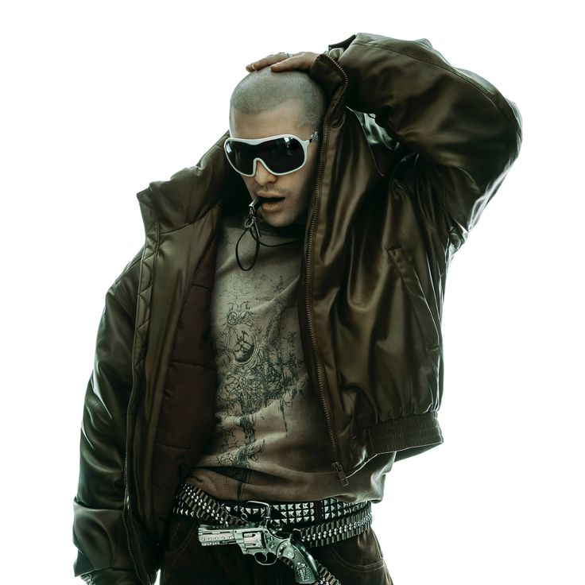
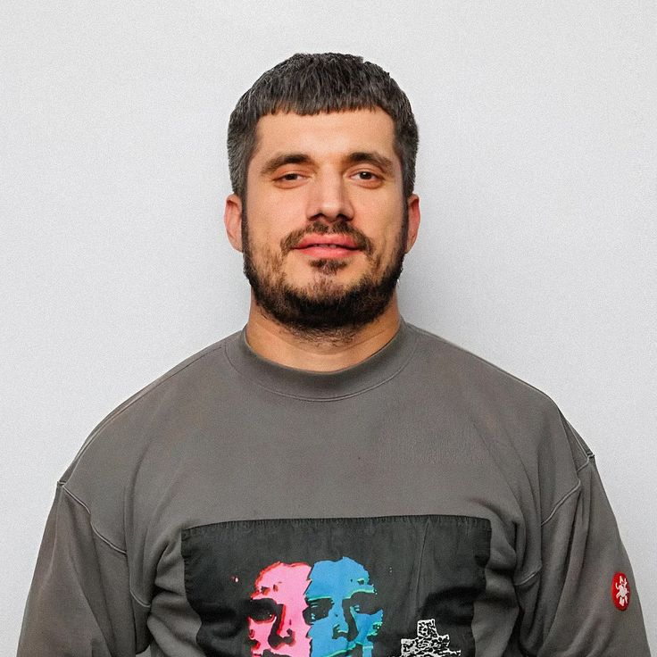

трое музыкальных исполнителей
Выбери исполнителя в меню, чтобы узнать о песне, исполнителе и тексте
СМН(Руслан Тушенцов)
CMH (Crazy Mega Hell) — псевдоним Руслана Тушенцова Российский видеоблогер и музыкант (род. 23 декабря 1995 года, Ачинск). Начал карьеру в 2012 году.
Подробнее...GSPD(Давид Деймур)

GSPD (читается «Джи‑Эс‑Пи‑Ди») — музыкальный проект российского музыканта и продюсера Давида Игоревича Декунова (также известен под ранним псевдонимом МС Господь).
ПодробнееПаша Техник(Павел Ивлев)

Паша Техник — российский рэпер, битмейкер, музыкальный продюсер, шоумен и блогер. Известен эпатажным поведением, провокационным творчеством и участием в скандалах. 5 апреля 2025 года (в возрасте 40 лет).
Подробнее